00이 매뉴얼에 대하여
부설주차장 법정대수 산정기는 시설물의 용도별 시설면적을 줄마다 넣어 주차장법 시행령 [별표 1]로 부설주차장 법정대수를 산정하고, 공동주택 · 오피스텔은 주택건설기준 등에 관한 규정 제27조 제1항으로 따로 산정해 더한 뒤, 조례 기준 · 장애인전용 · 환경친화적 자동차 전용주차구역까지 A4 산정서로 정리하는 도구입니다. 근거는 주차장법 제19조 · 주차장법 시행령 제6조 · [별표 1](2026. 8. 25. 개정, 2026. 8. 28. 시행), 주택건설기준 등에 관한 규정 제27조 제1항(2026. 9. 8. 시행), 환경친화적 자동차의 개발 및 보급 촉진에 관한 법률 시행령 제18조의5 · 제18조의6입니다.
| 항목 | 내용 |
|---|---|
| 대상 프로그램 | 부설주차장 법정대수 산정기 MANMIN Ver-5.1(v5.1.1) — 탭 막대 「📘 매뉴얼」 버튼으로 이 문서가 열립니다 |
| 접속 주소 | manminkim-eng.github.io/Parking-Lot-Act |
| 매뉴얼 판 | Ver-5.1 (화면 표기와 같은 판 번호, 초판) · 2026-10-15 · 작성 김만민 건축사(㈜대성건축사사무소) |
| 내려받기 | PDF(A4) · 부설주차장 법정대수 산정기 열기 |
| 예제 | 본문 그림은 예제 A(익산 복합용도 — 제1종 근생 450㎡ · 제2종 근생 400㎡ · 업무 1,200㎡)로 캡처했습니다 — 합계 12.2 → 법정 12대 · 장애인전용 1구획. 예제 B(공동주택 + 근생) · C(익산시 조례 자동 적용 — 법정 12대 → 조례 18대)는 부록 A2 |
| 근거 법령 | 주차장법 제19조 · 주차장법 시행령 제6조 · [별표 1](2026. 8. 25. 개정, 2026. 8. 28. 시행), 주택건설기준 등에 관한 규정 제27조 제1항(2026. 9. 8. 시행), 환경친화적 자동차의 개발 및 보급 촉진에 관한 법률 시행령 제18조의5 · 제18조의6 — LawMCP(국가법령정보센터) 원문 대조(2026-10-15) |
| 읽는 순서 | 처음이면 1장 → 2장(따라하기) → 필요할 때 3장(화면별 상세). 건축허가 · 설계도서에 쓰기 전에는 4장(법령 해설) · 5장(작업 방법) |
01한눈에 보기
설치 없이 브라우저에서 바로 실행되는 단일 페이지 앱(PWA)입니다. 입력한 내용은 브라우저 안에서만 계산되며 서버로 전송되지 않습니다.
무엇을 산정하나
[별표 1] 제1호 ~ 제11호 시설군 법정대수, 제5호 주택(제27조 제1항), 조례 기준 대수, 장애인 · 친환경차 · 경형 구획
복합용도
용도마다 한 줄 — 소수점 이하 첫째 자리까지 더한 뒤 끝수 처리(비고 4 · 6). 주택은 따로 산정해 더함
조례 적용
전북 14개 시 · 군 조례 [별표] 자동 적용, 그 밖 지역은 줄마다 「○㎡당 1대」(또는 %) — 2분의 1 범위를 넘으면 경고
1-1. 화면 구성
- 1작업 탭 · 매뉴얼
- 2요약 스트립
- 3공사 정보(A4 표제)
- 4지역 · 조례
- 5시설 목록(복합용도)
- 6산정 결과
- 7초기화 · 이용안내
| 영역 | 내용 |
|---|---|
| 헤더 · 탭 | 「⌨ 산정 입력 · 결과」 → 「📄 A4 산정서」, 오른쪽 끝 「📘 매뉴얼」 |
| 요약 스트립 | 어느 탭에 있든 용도 구성 · 지역 · 시설면적 합계 · 법정 대수 · 조례 대수 · 장애인 구획을 한 줄로 보여 줍니다 |
| 왼쪽 입력 | 공사 정보(A4 표제) → 지역 · 조례 → 시설 목록 → 전용 주차구획 → 「산정」 · 「초기화」 |
| 오른쪽 결과 | 산정 결과(대수) → 용도별 산정표(줄별 산식) → 전용 주차구획 — 값을 바꾸면 즉시 다시 계산됩니다 |
1-2. 작업 탭·근거 표시
- 1산정 입력 · 결과
- 2A4 산정서
- 3매뉴얼
- 4근거 · 시행일
헤더 오른쪽에는 적용 근거(주차장법 제19조 · 시행령 제6조 · [별표 1] · 주택건설기준 제27조)와 시행일 [시행령 시행 2026. 8. 28.]이 표시됩니다.
1-3. 설치·보관·매뉴얼
| 항목 | 내용 |
|---|---|
| 설치 | 주소창의 설치 아이콘 또는 휴대전화 「홈 화면에 추가」로 앱처럼 쓸 수 있습니다. 한 번 연 뒤에는 인터넷 없이도 산정됩니다 |
| 결과 보관 | 산정 결과는 「A4 산정서」 탭에서 PDF · JPG로 남기십시오. 화면을 닫으면 입력값은 남지 않습니다 |
| 매뉴얼 | 탭 막대 오른쪽 끝 「📘 매뉴얼」 — 인터넷 연결 시 새 창으로 열립니다(오프라인 캐시 대상이 아닙니다) |
| 업데이트 | 새 버전이 올라오면 다음 접속 때 자동으로 바뀝니다. 화면 표기가 Ver-5.1이 아니면 새로 고침(Ctrl+F5) |
021분 따라하기
예제 A — 익산시 근린생활시설 및 업무시설(복합용도 3개 용도)입니다. 아래 순서대로 넣으면 법정 12대 · 장애인전용 1구획이 나옵니다.
- ① 지역 · 조례시 · 군 · 구 「전북특별자치도 익산시」, 주택 지역 구분 「다. 가 · 나목 외의 시지역」, 조례명은 비워 둡니다(법정 기준만 산정, 3-1).
- ② 1번 줄용도 「제1종 근린생활시설」, 시설면적 450㎡ → 450 ÷ 200 = 2.25 → 2.2(소수점 이하 첫째 자리까지).
- ③ 2번 줄「＋ 용도 추가」 → 「제2종 근린생활시설」 400㎡ → 400 ÷ 200 = 2.0.
- ④ 3번 줄「업무시설」 1,200㎡ → 1,200 ÷ 150 = 8.0(3-2).
- ⑤ 합산 · 끝수2.2 + 2.0 + 8.0 = 12.2 → 소수점 이하 0.2는 0.5 미만이므로 버림 → 12대(비고 4 · 6, 3-4).
- ⑥ 전용 구획장애인전용 「대상」 · 조례 비율 2 % → 12 × 2 % = 0.24 → 올림 1구획, 경형 1대까지 인정(3-5).
- ⑦ A4 산정서「📄 A4 산정서」 탭에서 「🖨️ 인쇄 · PDF」 또는 「🖼️ JPG 저장」(3-9).
| 항목 | 예제 A |
|---|---|
| 제1종 근생 450㎡ | 제3호 200㎡당 1대 → 2.25 → 2.2 |
| 제2종 근생 400㎡ | 제3호 200㎡당 1대 → 2.0 |
| 업무 1,200㎡ | 제2호 150㎡당 1대 → 8.0 |
| 합계 | 12.2 → 비고 6 → 12대 |
| 장애인전용 | 1구획 이상 (2 % · 올림) |
| 친환경차 | 총주차대수 50대 미만 — 의무 없음 |
03화면별 기능 상세
3-1. 지역·조례
- 1전북 시 · 군 조례 선택
- 2시 · 군 · 구
- 3주택 지역 구분(제27조 표)
- 4적용 조례명
| 항목 | 설명 |
|---|---|
| 전북 시 · 군 조례 | 전주 · 군산 · 익산 · 정읍 · 남원 · 김제 · 완주 · 진안 · 무주 · 장수 · 임실 · 순창 · 고창 · 부안 중 하나를 고르면 시 · 군명 · 지역 구분(시 다 · 군 라) · 조례명 · 장애인전용 비율이 채워지고, 줄마다 그 조례 [별표] 기준이 적용됩니다(4-10). 전북 외 지역은 「직접 입력」 |
| 시 · 군 · 구 | A4 산정서 「대지 위치」에 그대로 표기됩니다. 이 칸 자체는 산정값에 영향이 없습니다 |
| 주택 지역 구분 | 제27조 제1항 표의 가 ~ 라 — 가. 특별시 · 나. 광역시 · 특별자치시 · 수도권 내 시지역 · 다. 가 · 나목 외의 시지역 · 수도권 내 군지역 · 라. 그 밖의 지역. 공동주택 · 다가구 · 오피스텔(제5호)에만 쓰입니다 |
| 적용 조례명 | 전북 시 · 군을 고르면 자동으로 들어갑니다. 직접 입력할 때는 근거 조례명을 적으면 A4 산정서 「적용 조례」 · 결과 카드에 표기됩니다 |
| 군산 전용 칸 | 군산시를 고르면 「건축연면적」(근생 1,000㎡ 미만 200㎡당 1대) · 「준주거 · 상업지역」(원룸형 60㎡당 1대) 칸이 나타납니다 |
3-2. 시설 목록(복합용도)
- 11번 줄 — 제1종 근생 450㎡
- 22번 줄 — 제2종 근생 400㎡
- 33번 줄 — 업무 1,200㎡
- 4조례 기준 칸
- 5＋ 용도 추가
- 6시설면적 · 증축 · 용도변경
| 항목 | 설명 |
|---|---|
| 용도 | [별표 1] 시설군별로 묶은 목록에서 고릅니다. 제1종 근생 중 공중화장실 · 대피소 · 지역아동센터, 의료시설 중 정신 · 요양 · 격리병원, 학원 · 독서실 · 금융업소 등 세부 구분이 따로 있습니다 |
| 시설면적 | 공용면적을 포함하고 부설주차장 바닥면적은 빼는 면적입니다(비고 2). 골프장은 홀, 골프연습장은 타석, 옥외수영장 · 관람장은 정원(명)을 넣습니다 |
| 조례 기준 | 전북 시 · 군을 골랐으면 비워 둡니다 — 칸에 「비우면 ○○시 조례 ○㎡」로 적용값이 보입니다. 전북 외 지역은 「○㎡당 1대」를 넣고, 단독주택 · 골프장 등 면적 기준이 아닌 용도는 증감 %로 넣습니다. 직접 넣은 값이 내장값보다 우선합니다(4-6) |
| ＋ 용도 추가 · ✕ | 복합용도는 용도마다 한 줄씩 추가하고, 필요 없는 줄은 ✕로 지웁니다 |
| 증축 · 용도변경 | 증축 · 용도변경은 해당 부분의 면적만 넣습니다(비고 5 · 7). 용도변경 특례(시행령 제6조 제4항)는 따로 확인합니다 |
| 설치 면제 시설 | 비고 1의 시설(가목 변전소 · 양수장 · 정수장 등, 나목 수도원 · 수녀원 · 제실 · 사당, 다목 동물 및 식물 관련 시설(도축장 · 도계장 제외), 라목 방송통신시설 중 송신 · 수신 · 중계시설, 바목 도시철도 역사, 사목 전통한옥 밀집지역 안의 전통한옥)을 고르면 그 줄은 0대입니다 |
3-3. 산정 결과
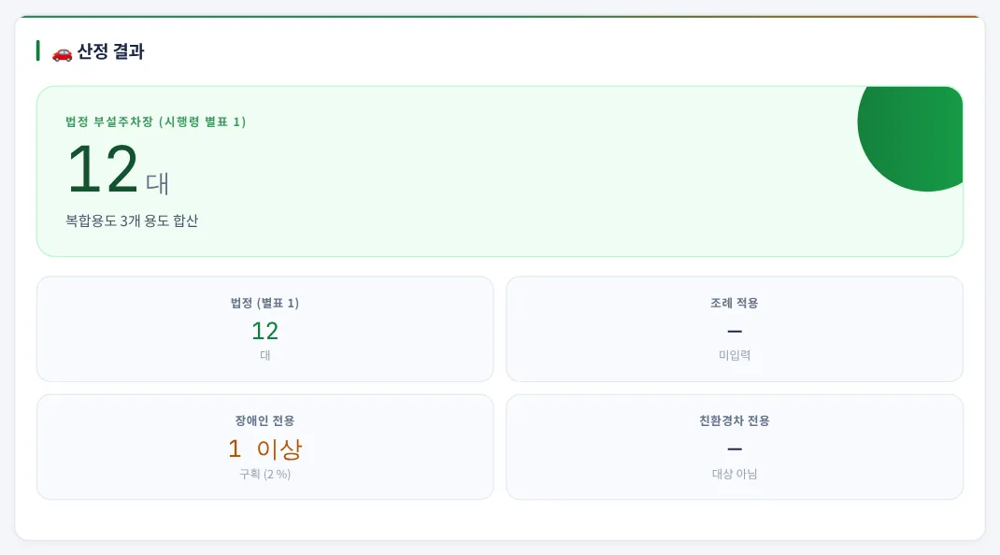
12345- 1부설주차장 대수
- 2법정(별표 1)
- 3조례 적용
- 4장애인 전용
- 5친환경차 전용
큰 숫자는 최종 부설주차장 대수입니다 — 전북 시 · 군을 골랐거나 조례 기준을 하나라도 넣으면 조례 적용 대수, 아니면 법정(별표 1) 대수입니다. 아래 칸에 법정 · 조례 대수와 장애인 · 친환경차 전용 구획 수를 함께 보여 줍니다.
3-4. 용도별 산정표
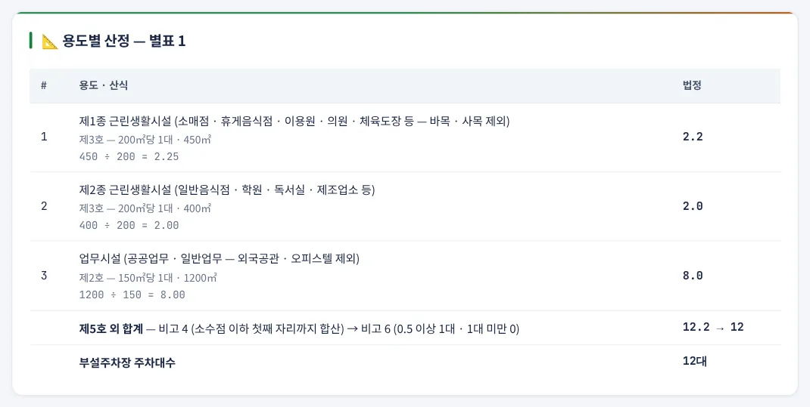
123- 1줄별 산식 — 소수 첫째 자리
- 2합계 → 비고 6
- 3부설주차장 주차대수
줄마다 용도 · 근거 호 · 시설면적과 산식(시설면적 ÷ 기준면적)을 보여 주고, 값은 소수점 이하 첫째 자리까지 남깁니다(둘째 자리 이하 버림). 아래 「제5호 외 합계」에서 비고 4로 더한 값을 비고 6으로 끝수 처리하고, 제5호 주택이 있으면 그 대수를 따로 더해 「부설주차장 주차대수」를 냅니다.
3-5. 전용 주차구획
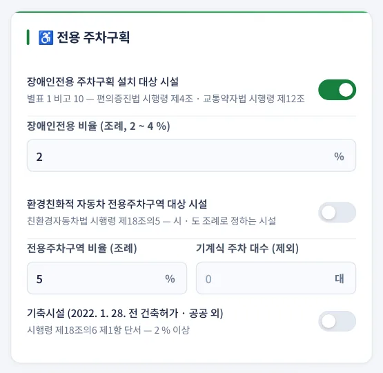
12345- 1장애인전용 대상
- 2조례 비율 2 ~ 4 %
- 3친환경차 대상
- 4기계식 대수 제외
- 5기축시설 2 %
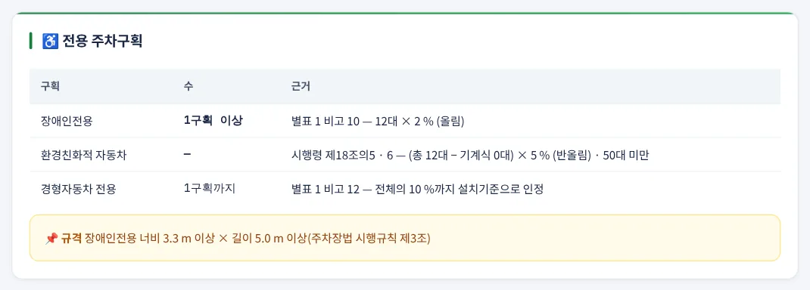
123- 1장애인전용 (비고 10)
- 2친환경차 (제18조의5 · 6)
- 3경형 (비고 12)
| 항목 | 설명 |
|---|---|
| 장애인전용 | 조례로 정한 비율(2 ~ 4 %)을 넣습니다 — 전체 대수 × 비율, 올림. 부설주차장 10대 미만은 의무 없음(비고 10). 구획 크기 3.3 m × 5.0 m 이상(시행규칙 제3조) |
| 환경친화적 자동차 | 시 · 도 조례 대상 시설이면 「대상」 — 총주차대수(기계식 제외) 50대 이상일 때 5 %(기축시설 2 %) 이상, 소수점 이하 반올림(친환경자동차법 시행령 제18조의5 · 6). 조례 비율이 더 높으면 고쳐 넣습니다 |
| 기계식 대수 | 기계식 주차장치 대수는 친환경차 산정 기준 대수에서 뺍니다 |
| 경형자동차 | 전체 주차단위구획의 10 %까지를 경형 전용구획으로 설치기준에 넣을 수 있습니다(비고 12) — 「○대까지」로 표시 |
3-6. 사례 — 공동주택 + 근린생활시설
- 1주택형 59㎡ × 40세대
- 2주택형 84㎡ × 60세대
- 3도시형 생활주택
- 4제1종 근생 600㎡
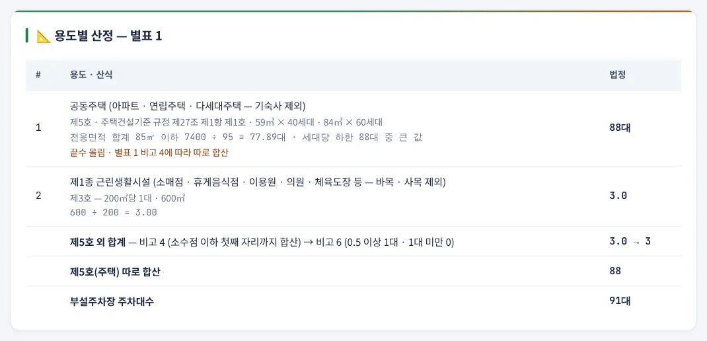
1234- 1제27조 — 전용면적 합계 · 세대당 하한
- 2제5호 외 합계
- 3제5호 따로 합산
- 4합계 91대
공동주택은 주택형마다 「세대 전용면적 × 세대수」를 넣습니다. 전용면적 85㎡ 이하 합계 59 × 40 + 84 × 60 = 7,400㎡ ÷ 95(다. 시지역) = 77.89대, 세대당 하한 40 × 0.7(60㎡ 이하) + 60 × 1 = 88대 → 큰 값 · 끝수 올림 88대(제27조 제1항 제1호). 제1종 근생 600㎡ ÷ 200 = 3.0 → 3대를 따로 더해 91대입니다(비고 4 — 제5호는 따로 합산).
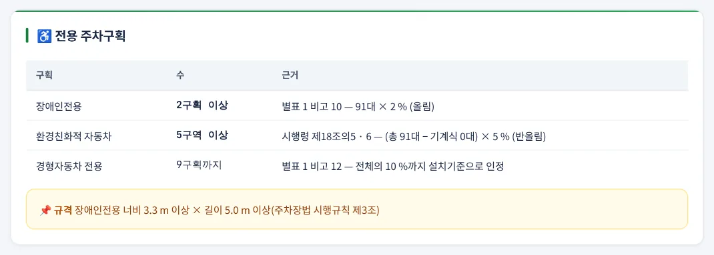
12- 1장애인 2구획
- 2친환경차 5구역
장애인전용 91 × 2 % = 1.82 → 올림 2구획, 친환경차 91 × 5 % = 4.55 → 반올림 5구역, 경형 9대까지 인정입니다.
3-7. 사례 — 전북 조례 자동 적용
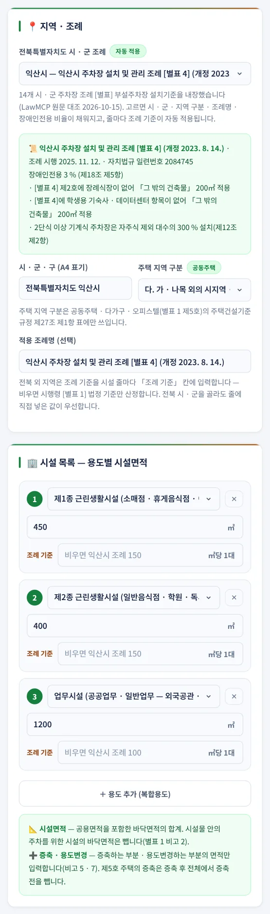
1234- 1익산시 조례 선택
- 2조례 · 장애인 3 % · 유의사항
- 3조례명 자동 입력
- 4조례 기준 — 익산시 150㎡
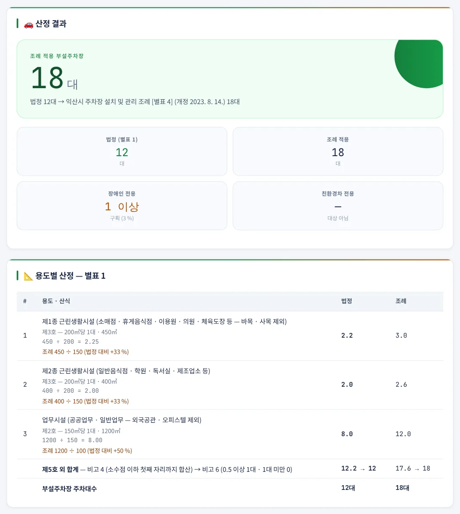
1234- 1조례 적용 18대
- 2법정 12대
- 3법정 2.2 · 조례 3.0
- 4업무 8.0 → 12.0
예제 A와 같은 용도 구성에서 「전북특별자치도 시 · 군 조례」를 익산시로 고른 경우입니다. 익산시 주차장 설치 및 관리 조례 [별표 4]는 근린생활시설 150㎡, 업무시설 100㎡당 1대이므로 450 ÷ 150 = 3.0, 400 ÷ 150 = 2.66 → 2.6, 1,200 ÷ 100 = 12.0 → 합계 17.6 → 18대(법정 12대). 별표 1 기준 대비 비율은 200 ÷ 150 = 1.33배 · 150 ÷ 100 = 1.5배로 2분의 1 범위 안입니다. 장애인전용은 익산시 조례 제18조 제5항의 3 %가 자동으로 들어가 18 × 3 % = 0.54 → 1구획입니다. 조례 정보 상자에는 근거 조례 · 시행일 · 자치법규 일련번호와 시 · 군별 유의사항이 표시됩니다.
3-8. 이용안내·관련 법령 창
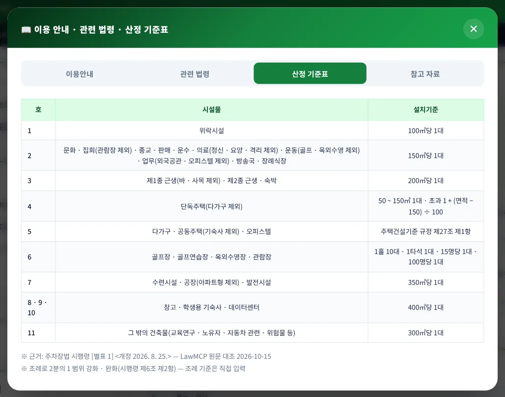
오른쪽 아래 「📖 이용안내」 버튼은 이용안내 · 관련 법령 · 산정 기준표 · 참고 자료 4개 탭 창입니다. 참고 자료에는 국가법령정보센터(시행령 · 주택건설기준), 자치법규정보시스템(조례 원문), 세움터 연결이 있습니다. 창은 ✕ 또는 Esc로 닫습니다.
3-9. A4 산정서·출력
- 1인쇄 / PDF
- 2JPG 저장
- 3A4 산정서
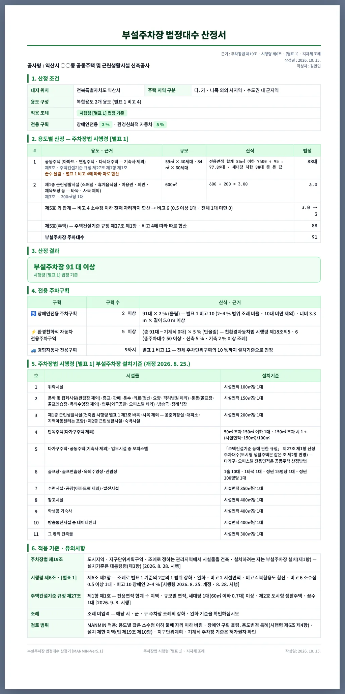
123456- 11. 산정 조건
- 22. 용도별 산정
- 33. 산정 결과
- 44. 전용 주차구획
- 55. 별표 1
- 66. 적용 기준
산정서는 1. 산정 조건, 2. 용도별 산정(법정 · 조례 열), 3. 산정 결과, 4. 전용 주차구획, 5. 시행령 [별표 1] 설치기준 표, 6. 적용 기준 · 유의사항 6개 절이며, 화면과 같은 산식을 담습니다. 공사명 · 작성자는 「공사 정보」 카드에서 넣습니다.
3-10. 휴대전화 화면
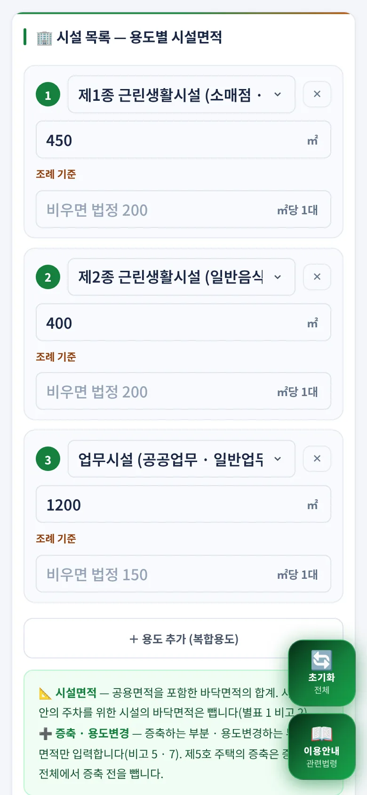
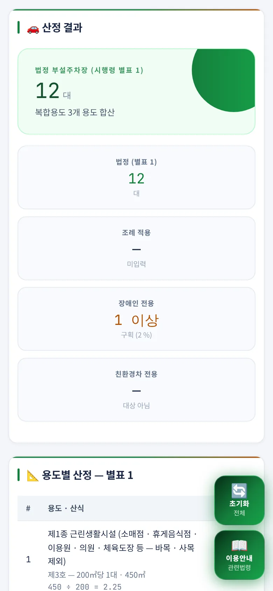
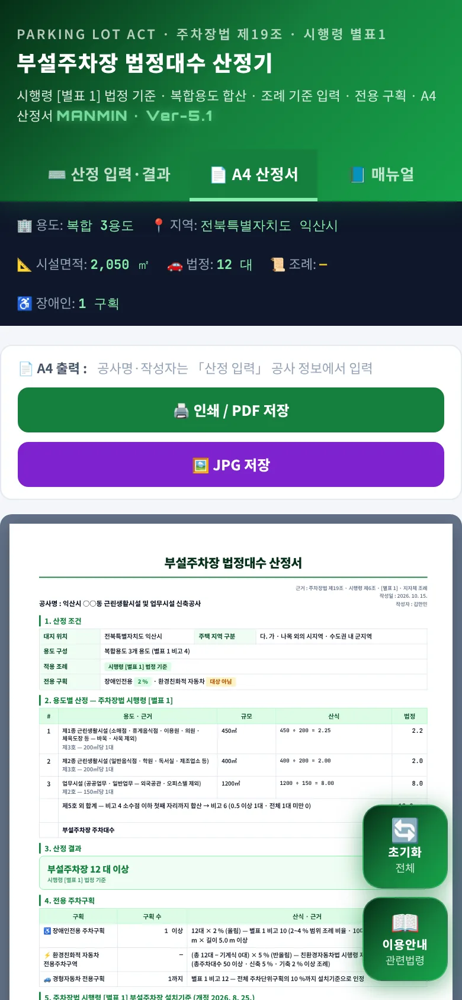
좁은 화면에서는 입력 카드와 결과 카드가 한 줄로 쌓입니다. A4 산정서는 화면 폭에 맞춰 축소해 보여 주며 인쇄 · JPG는 원본 A4 크기로 나옵니다.
04법령 해설
4-1. 근거 체계
| 법령 | 내용 |
|---|---|
| 주차장법 제19조 | 도시지역 · 지구단위계획구역 · 조례로 정하는 관리지역에서 시설물을 건축 · 설치하려는 자는 부설주차장 설치(제1항), 시설물 종류와 설치기준은 대통령령(제3항) [2026. 8. 28. 시행] |
| 시행령 제6조 | 제1항 설치기준은 [별표 1] · 제2항 조례로 2분의 1 범위에서 강화 · 완화 · 제4항 용도변경 특례 [2026. 8. 25. 개정 · 8. 28. 시행] |
| 시행령 [별표 1] | 부설주차장의 설치대상 시설물 종류 및 설치기준 — 제1호 ~ 제11호 · 비고 1 ~ 12 |
| 주택건설기준 등에 관한 규정 제27조 | 제1항 주택단지 주차장 — [별표 1] 제5호(다가구 · 공동주택 · 오피스텔)가 따르는 기준 [2026. 9. 8. 시행] |
| 친환경자동차법 시행령 제18조의5 · 6 | 환경친화적 자동차 전용주차구역 설치 대상 · 비율 [2025. 10. 1. 시행] |
| 주차장법 시행규칙 제3조 | 주차구획 크기 — 장애인전용 3.3 × 5.0 m · 일반형 2.5 × 5.0 m · 경형 2.0 × 3.6 m |
LawMCP(국가법령정보센터) 원문 대조 2026-10-15 · 원문은 law.go.kr에서 열람할 수 있습니다.
4-2. [별표 1] 설치기준
| 호 | 시설물 | 설치기준 |
|---|---|---|
| 1 | 위락시설 | 시설면적 100㎡당 1대 |
| 2 | 문화 및 집회(관람장 제외) · 종교 · 판매 · 운수 · 의료(정신병원 · 요양병원 · 격리병원 제외) · 운동(골프장 · 골프연습장 · 옥외수영장 제외) · 업무(외국공관 · 오피스텔 제외) · 방송국 · 장례식장 | 시설면적 150㎡당 1대 |
| 3 | 제1종 근린생활시설(바 · 사목 제외) · 제2종 근린생활시설 · 숙박시설 | 시설면적 200㎡당 1대 |
| 4 | 단독주택(다가구주택 제외) | 50㎡ 초과 150㎡ 이하 1대 · 150㎡ 초과 1대 + (시설면적 − 150㎡) ÷ 100㎡ |
| 5 | 다가구주택 · 공동주택(기숙사 제외) · 오피스텔 | 주택건설기준 등에 관한 규정 제27조 제1항(도시형 생활주택 단서 포함) |
| 6 | 골프장 · 골프연습장 · 옥외수영장 · 관람장 | 1홀당 10대 · 1타석당 1대 · 정원 15명당 1대 · 정원 100명당 1대 |
| 7 | 수련시설 · 공장(아파트형 제외) · 발전시설 | 시설면적 350㎡당 1대 |
| 8 | 창고시설 | 시설면적 400㎡당 1대 |
| 9 | 학생용 기숙사 | 시설면적 400㎡당 1대 |
| 10 | 방송통신시설 중 데이터센터 | 시설면적 400㎡당 1대 |
| 11 | 그 밖의 건축물 | 시설면적 300㎡당 1대 |
2026. 8. 25. 개정은 제5호에 도시형 생활주택 단서를 더한 것이며, 데이터센터(제10호)는 2021. 3. 30. 개정 별표에 이미 있던 항목입니다. 교육연구 · 노유자 · 자동차 관련 · 위험물 저장 및 처리 시설 등 제1호 ~ 제10호에 없는 용도는 제11호(300㎡)입니다.
4-3. 시설면적·면제 시설
| 비고 | 내용 |
|---|---|
| 비고 1 | 설치 면제 가능 시설 가 ~ 사목 — 이 도구에서 「설치 면제 시설」을 고르면 0대 |
| 비고 2 | 시설면적은 공용면적을 포함한 바닥면적 합계, 부설주차장 · 기계식 주차장치의 바닥면적은 제외 |
| 비고 5 · 7 | 증축은 증축 부분, 용도변경은 변경 부분의 면적으로 산정 |
4-4. 복합용도·끝수
「소수점 이하 첫째 자리까지」에서 둘째 자리 이하를 어떻게 처리하는지는 별표에 명시가 없어 MANMIN은 버림으로 적용합니다(예: 2.25 → 2.2). 허가권자가 반올림으로 해석하는 경우 결과가 0.1대 달라질 수 있으니 경계값에서는 협의하십시오.
4-5. 공동주택 제27조
| 지역 | 전용 85㎡ 이하 — ㎡당 1대 | 전용 85㎡ 초과 — ㎡당 1대 |
|---|---|---|
| 가. 특별시 | 75㎡ | 65㎡ |
| 나. 광역시 · 특별자치시 · 수도권 내 시지역 | 85㎡ | 70㎡ |
| 다. 가 · 나목 외의 시지역 · 수도권 내 군지역 | 95㎡ | 75㎡ |
| 라. 그 밖의 지역 | 110㎡ | 85㎡ |
조례로 강화할 수 있는 범위는 1/5(전용 60㎡ 이하만이면 1/2)이며, 도시형 생활주택은 강화 · 완화 모두 가능합니다. 이 도구는 주택 줄의 「조례 증감 %」로 받고 범위를 검사합니다. ※ 주택건설기준 등에 관한 규정은 2026-11-07 시행 개정이 예정되어 있으니 시행 후 원문을 다시 확인하십시오.
4-6. 조례 강화·완화
전북특별자치도 14개 시 · 군은 조례 [별표]를 내장했습니다(4-10). 그 밖 지역은 대지 소재 시 · 군 · 구 주차장 조례의 [별표]를 자치법규정보시스템(elis.go.kr)에서 확인해 해당 용도 줄에 넣으십시오. 내장값이든 입력값이든 범위를 벗어나면 결과에 「⚠ ○번 줄」 경고가 뜹니다 — 허가권자가 실제로 적용하는 조례 원문값으로 산정하되, 상위법 범위 밖이므로 확인하라는 뜻입니다.
4-7. 전용 주차구획
| 구획 | 기준 |
|---|---|
| 장애인전용(비고 10) | 부설주차장 대수 × 조례 비율(2 ~ 4 %) — 10대 미만 제외 · MANMIN 올림 · 3.3 × 5.0 m 이상 |
| 환경친화적 자동차(제18조의5 · 6) | 총주차대수(기계식 제외) 50대 이상 대상 시설 중 시 · 도 조례로 정하는 시설 · 5 %(기축 2 %) 이상 · 소수점 이하 반올림 |
| 경형자동차(비고 12) | 전체 주차단위구획의 10 %까지 설치기준에 포함 |
4-8. 산정 범위·한계
| 항목 | 내용 |
|---|---|
| 산정하는 것 | [별표 1] 제1호 ~ 제11호 · 비고 1 · 2 · 4 · 5 · 6 · 7 · 10 · 12, 제27조 제1항 제1 · 2호(조례 강화 · 완화 범위 포함), 시행령 제6조 제2항 범위 검사, 친환경차 전용주차구역 비율 |
| 산정하지 않는 것 | 시행령 제6조 제4항 용도변경 특례, 법 제19조 제4항 · 제10항 설치 제한 · 인근 설치, 지구단위계획 · 주차장 수급 실태에 따른 별도 기준, 기계식 주차장 설치기준, 이륜자동차 주차구획 |
| 사용자 판단값 | 용도 분류 · 시설면적(비고 2), 제27조 지역 구분, 조례 기준 · 장애인 비율 · 친환경차 대상 여부 |
4-9. v5.1.0 정정 (2026-10-15)
| 항목 | 기존 | 정정 |
|---|---|---|
| 시행령 판 표기 | 2025. 8. 17. 판 | 2026. 8. 25. 개정 · 8. 28. 시행 |
| 면적 | 연면적 | 시설면적(비고 2) |
| 운동 · 의료시설 | 200㎡ · 정신 · 요양병원 의무 없음 | 150㎡ · 정신 · 요양 · 격리병원 300㎡ |
| 교육연구 · 노유자 · 자동차 관련 | 200 · 150㎡ | 300㎡(제11호) |
| 단독주택 | 150㎡당 1대 | 50 ~ 150㎡ 1대 · 초과 (면적 − 150) ÷ 100 추가 |
| 공동주택 · 오피스텔 | 세대당 0.7 / 1.0대 | 제27조 제1항 — 전용면적 합계 ÷ 지역별 면적 · 세대당 하한 |
| 수련시설 · 면제 시설 | 없음 | 350㎡(제7호) · 비고 1 면제 0대 |
| 끝수 | 올림 · 항상 1대 이상 | 0.5 이상 1대 · 전체 1대 미만 0대(비고 6) |
| 복합용도 | 주용도 하나로 산정 | 용도별 줄 입력 · 첫째 자리까지 합산 · 주택 따로(비고 4) |
| 조례 | 전북 6개 시 조례 내장 | 내장 삭제 → 조례명 · 줄별 기준 직접 입력 · 2분의 1 범위 검사 |
| 역세권 감면 · 주유소 최소 2대 | 적용 | 근거 없음 → 삭제 |
| 장애인전용 | 50대 이상 2 % · 미만 1구획 | 2 ~ 4 % 조례 비율 · 10대 미만 의무 없음 |
| 전기차 | 100대 이상 · 올림 | 50대 이상(기계식 제외) · 5 %(기축 2 %) · 반올림 |
| 이륜자동차 5 % | 50대 이상 | 부설주차장 설치 의무 근거 없음 → 삭제 |
| 경형 전용 | 없음 | 10 %까지 인정(비고 12) |
예전 판으로 만든 산정서는 다시 산정하십시오. 특히 공동주택 · 운동 · 의료 · 교육연구시설과 복합용도 건축물의 대수가 달라집니다. 엔진은 화면 · A4 · 검증이 같은 코드(window.PARKENG)를 쓰며, 별도로 짠 독립 구현과 무작위 50,000건을 대조해 불일치 0건을 확인했습니다.
4-10. 전북 14개 시 · 군 조례 (v5.1.1)
LawMCP(국가법령정보센터 자치법규) 원문 대조 2026-10-15 · 조례 [별표] 부설주차장의 설치대상시설물 종류 및 설치기준 · 장애인전용 비율은 각 조례 본문 조항
| 시 · 군 | 근거 | 위락 · 제2호 · 근생 · 공장 · 그 밖 (㎡당 1대) | 장애인 | 특례 |
|---|---|---|---|---|
| 전주시 | 별표 7 (개정 2025. 3. 7.) | 80 · 120(예식장 · 장례식장 80) · 150 · 350 · 250 | 3 % | 생활숙박 100㎡ 또는 호실당 0.7대 · 지식산업센터 150㎡ · 소형 주택 0.9대 |
| 군산시 | 별표 4 (개정 2018. 7. 12.) | 80 · 100(예식장 · 장례식장 75) · 160 · 350 · 250 | 4 % | 근생 연면적 1,000㎡ 미만 200㎡ · 운동 · 숙박 · 운수 120㎡ · 골프연습장 1.5대 · 단독 75㎡ · 도서지역 미적용 |
| 익산시 | 별표 4 (개정 2023. 8. 14.) | 80 · 100 · 150 · 360(수련 · 발전 250) · 200 | 3 % | 교육연구 150㎡ · 단독 135㎡ · 공동주택 세대당 1 · 1.5대 · 75㎡당 1.5대 |
| 정읍시 | 별표 4 | 80 · 120 · 150 · 350 · 250 | 4 % | 단독 100㎡ · 공동주택 세대당 1.0 ~ 1.6대 · 100㎡ 초과 50㎡당 1대 |
| 남원시 | 별표 3 (개정 2024. 2. 5.) | 100 · 150 · 200 · 400(수련 · 발전 350) · 300 | 3 % | 공동주택 세대당 1.2(60㎡ 이하 0.8)대 이상 · 소형 주택 0.9대 |
| 김제시 | 별표 4 (개정 2013. 7. 25.) | 100 · 150 · 200 · 350 · 300 | 4 % | 시행령 기준과 같음(학생용 기숙사 · 데이터센터 항목 없음) |
| 완주군 | 별표 7 (개정 2017. 9. 28.) | 100 · 150 · 200 · 400 · 350 | 3 % | 다중주택 별도 · 공동주택 세대당 1(0.9)대 이상 · 원룸형 1.5배 |
| 진안군 | 별표 6 | 100 · 150(종교 · 운수 · 장례식장 350) · 200 · 400 · 350 | 3 % | 단독 85㎡ · 원룸형 세대당 0.4대 |
| 무주군 | 별표 7 (개정 2020. 11. 16.) | 100 · 150 · 200 · 350 · 300 | 2 % | 공동주택 85 · 70㎡당 · 세대당 1대 이상 · 원룸형 0.9(0.75)대 |
| 장수군 | 별표 4 (개정 2015. 3. 25.) | 100 · 150 · 200 · 350(1만㎡ 이상 500) · 300 | 3 % | 단독 100㎡ · 장애인 제17조 3 %(별표 비고 10은 2 % — 상충) |
| 임실군 | 별표 4 | 100 · 150 · 200 · 350 · 300 | 2 % | 시행령 기준과 같음 |
| 순창군 | 별표 5 | 100 · 150 · 200 · 350 · 300 | 2 % | 시행령 기준과 같음 |
| 고창군 | 별표 4 (개정 2016. 10. 28.) | 100 · 150 · 200 · 400 · 300 | 2 % | 수련 · 공장 · 발전 400㎡ |
| 부안군 | 제11조 제2항 (시행령 별표 1 준용) | 100 · 150 · 200 · 350(1만㎡ 이상 450) · 300 | 3 % | 1만㎡ 이상 공장 완화 |
친환경차 전용주차구역은 「전북특별자치도 환경친화적 자동차 보급 및 이용 활성화를 위한 조례」 제7조 · 제8조(2024. 11. 1. 시행)에 따라 주차단위구획 50개 이상 시설에 5 %(2022. 1. 28. 전 허가 기축시설 2 %) 이상, 반올림입니다. 범위 밖 조례값 — 익산 · 군산 · 정읍은 데이터센터(군산은 학생용 기숙사 포함)가 「그 밖」 기준으로 산정되어 법정 400㎡ 대비 2분의 1을 넘는 강화, 진안의 종교 · 운수 · 장례식장 350㎡는 2분의 1을 넘는 완화, 익산 · 정읍 공동주택 세대당 기준은 제27조 제1항 단서 범위를 넘을 수 있습니다. 앱은 조례 원문값으로 산정하고 ⚠ 표시합니다. 조례가 개정되면 내장값과 달라질 수 있으니 자치법규정보시스템에서 시행일을 확인하십시오.
05실무 작업 방법
5-1. 단계별 절차
| 단계 | 내용 |
|---|---|
| ① 조건 정리 | 대지 위치(시 · 군 · 구), 용도지역 · 지구단위계획 여부, 층별 용도 · 시설면적(공용면적 배분 포함)을 정리합니다 |
| ② 조례 확인 | 전북 14개 시 · 군은 목록에서 고르고 조례 시행일을 확인합니다. 그 밖 지역은 자치법규정보시스템에서 주차장 조례 [별표]와 장애인 비율 · 친환경차 대상 시설을 확인해 입력합니다 |
| ③ 입력 · 산정 | 용도마다 한 줄씩 넣고, 조례 기준이 다른 용도만 「조례 기준」 칸을 채웁니다. 범위 경고가 있으면 조례 원문을 다시 확인합니다 |
| ④ 구획 배분 | 장애인 · 친환경차 · 경형 구획 수를 배치도에 반영하고 장애인전용은 3.3 × 5.0 m 이상으로 둡니다 |
| ⑤ 출력 | A4 산정서를 PDF로 남겨 건축허가 도서 · 협의 자료에 붙입니다 |
5-2. 허가 전 확인
| 항목 | 확인 |
|---|---|
| 용도변경 | 사용승인 후 5년 경과 · 1,000㎡ 미만 등 시행령 제6조 제4항 특례 대상 여부 |
| 설치 제한 · 인근 설치 | 법 제19조 제4항(부지 인근 설치) · 제10항(설치 제한 지역) 해당 여부 |
| 지구단위계획 | 지구단위계획에 주차 기준이 따로 있으면 그 기준 우선 여부를 허가권자와 협의 |
| 주택 개정 | 주택건설기준 등에 관한 규정 2026-11-07 시행 개정 내용 반영 여부 |
06문제 해결·FAQ
| 증상 | 해결 |
|---|---|
| 우리 시 조례가 목록에 없어요 | 내장 조례는 전북특별자치도 14개 시 · 군입니다. 그 밖 지역은 「직접 입력」으로 두고 조례 원문의 기준을 해당 줄에 넣으십시오(4-6) |
| ⚠ 표시가 떠요(전북) | 그 시 · 군 조례값이 상위법 범위 밖입니다 — 조례 원문값으로 산정했으니 허가권자와 확인하십시오(4-10) |
| 용도별로 반올림한 값과 달라요 | 비고 4에 따라 첫째 자리까지 더한 뒤 한 번만 끝수 처리합니다(4-4) |
| 1대 미만인데 0대로 나와요 | 전체 산정값이 1대 미만이면 0대입니다(비고 6 단서) |
| 아파트 대수가 세대수보다 많아요 | 전용면적 합계 ÷ 지역별 기준이 세대당 하한보다 크면 그 값을 씁니다(4-5) |
| 주택 지역 구분이 무엇인가요 | 제27조 제1항 표의 가 ~ 라 지역 — 익산 · 군산 · 전주 등 수도권 밖 시는 「다」입니다 |
| ⚠ 조례 범위 경고가 떠요 | 입력한 조례 기준이 별표 1 기준의 0.5 ~ 1.5배를 벗어났습니다 — 단위(㎡당 1대)와 원문을 확인하십시오 |
| 장애인 구획이 「의무 없음」이에요 | 부설주차장 10대 미만입니다(비고 10) |
| 친환경차가 0이에요 | 「대상」을 켜지 않았거나 총주차대수(기계식 제외)가 50대 미만입니다 |
| 예전 판과 값이 달라요 | v5.1.0에서 별표 1 원문대로 정정했습니다(4-9) |
| 화면이 예전 판이에요 | 새로 고침(Ctrl+F5) 또는 앱을 닫았다 다시 여십시오 |
부록
A1. 예제 입력값
| 예제 | 입력 |
|---|---|
| 예제 A | 전북특별자치도 익산시 · 지역 다 · 제1종 근생 450㎡ · 제2종 근생 400㎡ · 업무 1,200㎡ · 장애인 2 % |
| 예제 B | 전북특별자치도 익산시 · 지역 다 · 공동주택 59㎡ × 40세대 + 84㎡ × 60세대 · 제1종 근생 600㎡ · 장애인 2 % · 친환경차 5 % |
| 예제 C | 전북특별자치도 익산시 · 지역 다 · 익산시 조례 자동 적용 · 제1종 근생 450㎡ · 제2종 근생 400㎡ · 업무 1,200㎡ · 장애인 3 % |
예제 C는 예제 A와 같은 용도에 익산시 조례 [별표 4]를 자동 적용한 경우입니다.
A2. 예제 결과
| 예제 | 제5호 외 합계 | 제5호 | 법정(대) | 조례(대) | 장애인 | 친환경차 | 경형까지 |
|---|---|---|---|---|---|---|---|
| 예제 A | 12.2 | — | 12 | — | 1 | — | 1 |
| 예제 B | 3.0 | 88 | 91 | — | 2 | 5 | 9 |
| 예제 C | 12.2 | — | 12 | 18 | 1 | — | 1 |
A3. 버전 변경 내역
| 버전 | 내용 |
|---|---|
| Ver-5.1 · v5.1.1 (2026-10-15) | 전북특별자치도 14개 시 · 군 주차장 조례 [별표] 내장 · 자동 적용(4-10), 범위 밖 조례값 ⚠ 표시, 예식장 · 전시장 · 생활숙박 · 다중주택 · 지식산업센터 줄 분리 |
| Ver-5.1 · v5.1.0 (2026-10-15) | [별표 1](2026. 8. 25. 개정) 원문 대조 산정 전면 정정(4-9), 복합용도 줄 입력 · 제27조 공동주택 · 조례 직접 입력 · 전용 구획, 엔진 단일화 · 독립 검증, 탭 막대 「📘 매뉴얼」 · 사용자 매뉴얼 |
| Ver-5.0 (2026-09) | MANMIN 디자인 통일(헤더 · 탭 · 요약 스트립), A4 산정서 · JPG 저장, PWA |
A4. 용어
| 용어 | 뜻 |
|---|---|
| 시설면적 | 공용면적을 포함한 바닥면적 합계에서 주차시설 바닥면적을 뺀 면적(비고 2) |
| 복합용도 | 한 시설물에 [별표 1]의 둘 이상 용도가 있는 경우 — 용도별 산정 후 합산(비고 4) |
| 법정 대수 | [별표 1] · 제27조로 산정한 대수 |
| 조례 대수 | 시 · 군 · 구 조례가 2분의 1 범위에서 강화 · 완화한 기준으로 산정한 대수(시행령 제6조 제2항) |
| 주택 지역 구분 | 제27조 제1항 표의 가 ~ 라 지역 |
| 기축시설 | 친환경자동차법 시행령에서 신축 시설과 구분하는 기존 시설 — 전용주차구역 2 % 이상 |